Introduction to ggDoubleHeat
introduction.RmdThe ggDoubleHeat package is a ggplot2 extension. ggDoubleHeat plots are reformed heat maps that compare two sets of values with shared data attributes. They can be quite useful for visualizing data from two different sources with at least four dimensions in total, and can be generated in conjunction with using ggplot2 at ease.
When to use the package?
To begin with, it is necessary to introduce one of the built-in data sets in the package pitts_tg. This data set includes the weekly aggregated incidence rate for Google and Twitter COVID-related searches and tweets (with the keywords falling into the 9 categories) respectively in the Pittsburgh Metropolitan Statistical Area (MSA) in a 30-week period. For the complete data introduction, just type ?pitts_tg at the console.
Here is the structure of the data set:
library(ggplot2)
library(ggDoubleHeat)
pitts_tg
#> # A tibble: 270 × 6
#> msa week week_start category Twitter Google
#> <chr> <int> <date> <chr> <dbl> <dbl>
#> 1 Pittsburgh 1 2020-06-01 Covid 0.965 0.681
#> 2 Pittsburgh 1 2020-06-01 General Virus 0.538 0.0982
#> 3 Pittsburgh 1 2020-06-01 Masks 0.466 0.117
#> 4 Pittsburgh 1 2020-06-01 Sanitizing 0.0561 0.127
#> 5 Pittsburgh 1 2020-06-01 Social Distancing 0.294 0.0386
#> 6 Pittsburgh 1 2020-06-01 Symptoms 0.0457 0.0770
#> 7 Pittsburgh 1 2020-06-01 Tests 0.0130 0.00415
#> 8 Pittsburgh 1 2020-06-01 Treatment 0.0459 0.0376
#> 9 Pittsburgh 1 2020-06-01 Working 0.295 0.160
#> 10 Pittsburgh 2 2020-06-08 Covid 1.01 0.707
#> # … with 260 more rowsweek, category, Twitter, and Google are the four columns we need.
By using ggplot2 only, one of the heatmap-like ways to visualize pitts_tg is:
library(dplyr)
library(tidyr)
pitts_tg %>%
pivot_longer(cols = c(Twitter:Google), names_to = "source", values_to = "incidence_rate") %>%
ggplot(aes(week, category, fill = incidence_rate)) +
geom_tile() +
facet_wrap(~source)
When looking at the faceted plot, we immediately recognize that it is not easy to compare Google and Twitter incidence rate for a specific week and a specific category, as they are far apart from each other. To better visualize the data, here we have the ggDoubleHeat package, combining the above faceted plots into an integral one, while making it much easier to compare the difference among Google/Twitter incidence rates.
How to use the package?
All geom functions in ggDoubleHeat are adopted as geom_heat_*() for consistent naming conventions. Unlike a typical geom_*() function in ggplot2, all data variables do not need aes() when using geom_heat_*(), allowing plots to have different color renderings internally.
Now let’s meet the geom_heat_*() family one by one:
I. geom_heat_grid()
Two required arguments are needed when using geom_heat_grid(), outside and inside:
pitts_tg %>%
ggplot(aes(week, category)) +
geom_heat_grid(outside = Google, inside = Twitter)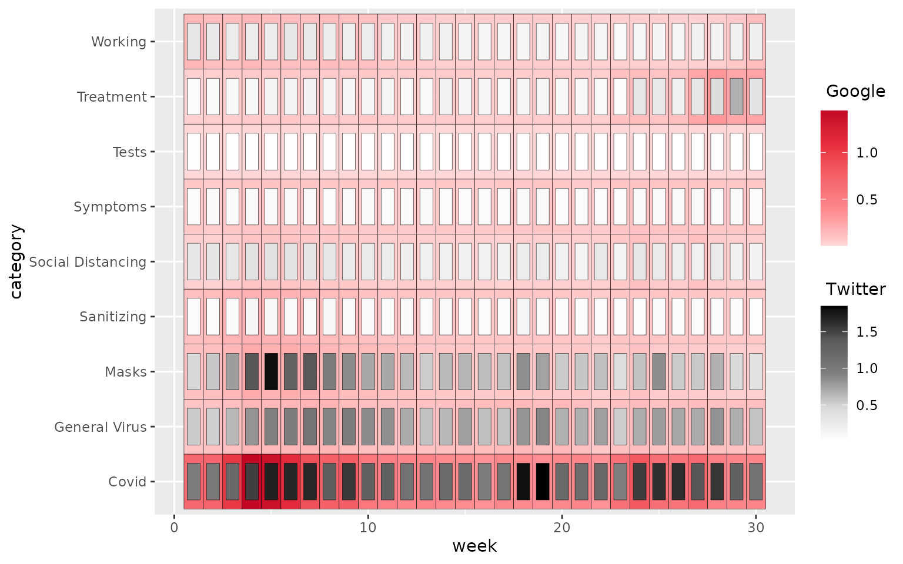
The outside portion of each heatgrid unit represents the Google incidence rate, and the inside the Twitter one. When looking the plot, it seems like the COVID category is an outlier among every week, comprising the larger values for both Google and Twitter when compared to the values of the other categories. Consequently, the non-COVID categories have plain colors, or in other words, the colors get washed out. One of the solutions is trans = "sqrt", a good option for adjusting the scale for fill.
pitts_tg %>%
ggplot(aes(week, category)) +
geom_heat_grid(outside = Google, inside = Twitter, trans = "sqrt")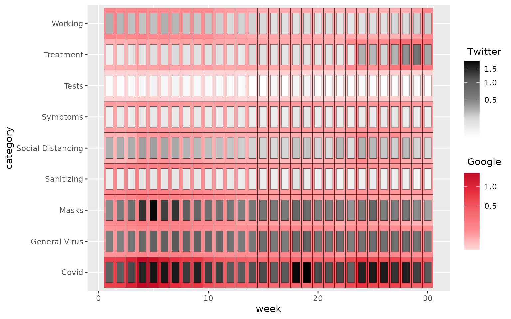
trans = "sqrt" here is equivalent to scale_x/y_sqrt() but for fill. The reason why log10 is not used on trans is that the most of the values from the data are less than 1, making fill to be negative.
The argument r is to tune the size of inside portion with respect to each grid. Users can make the fine adjustment based on their preference.
pitts_tg %>%
ggplot(aes(week, category)) +
geom_heat_grid(outside = Google, inside = Twitter, r = 5)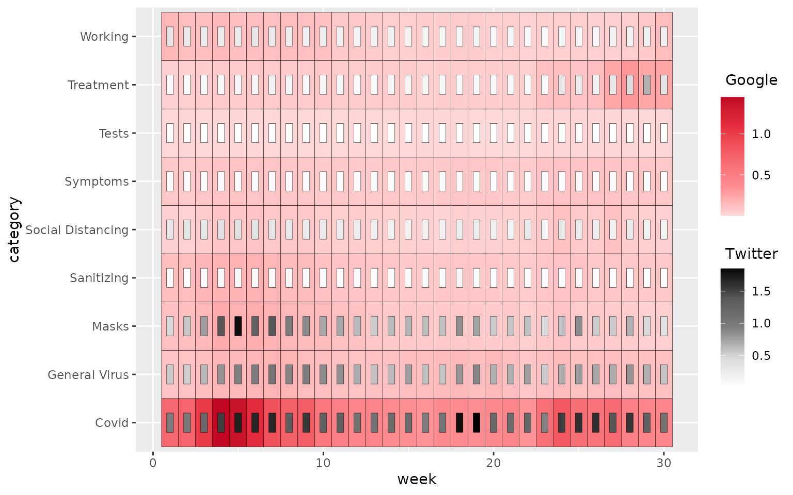
The larger r is, the smaller the inside turns out to be. N.B. r has to be greater than 2.
ggplot2 by default gives some padding (margins) around the plot, yet ggDoubleHeat provides a nifty function remove_padding() to help remove it and thus make the plot take up the entire plot space with the full appearance.
pitts_tg %>%
ggplot(aes(week, category)) +
geom_heat_grid(outside = Google, inside = Twitter) +
remove_padding()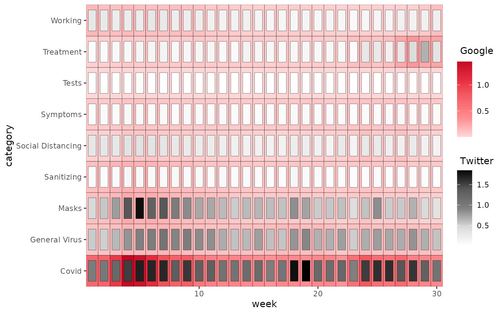
Regarding the colors for the inside and outside, users can pass a color vector to arguments outside_colors and inside_colors respectively:
pitts_tg %>%
ggplot(aes(week, category)) +
geom_heat_grid(outside = Google, outside_colors = c("lightblue", "springgreen2"),
inside = Twitter, inside_colors = c("lightpink", "orange"))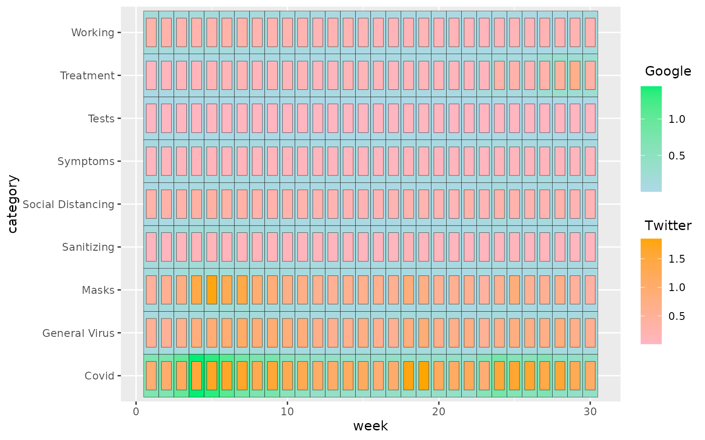
II. geom_heat_circle()
By replacing geom_heat_grid() with geom_heat_circle(),
pitts_tg %>%
ggplot(aes(week, category)) +
geom_heat_circle(outside = Google, inside = Twitter)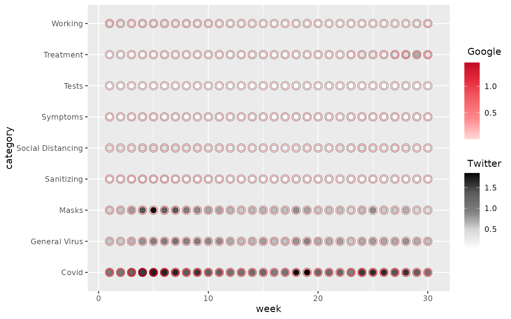
We can zoom into the circle plot by looking at Week 10 to 20:
pitts_tg %>%
filter(week >= 10, week <= 20) %>%
ggplot(aes(week, category)) +
geom_heat_circle(outside = Google, inside = Twitter, trans = "sqrt") +
scale_x_continuous(breaks = seq(10,20))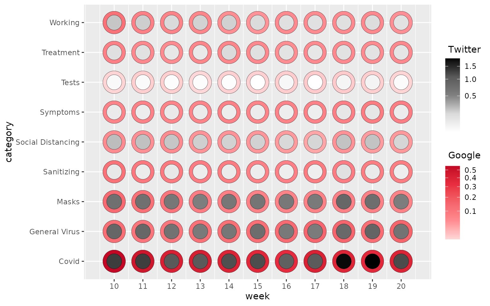
III. geom_heat_tri()
pitts_tg %>%
ggplot(aes(week, category)) +
geom_heat_tri(lower = Google, upper = Twitter)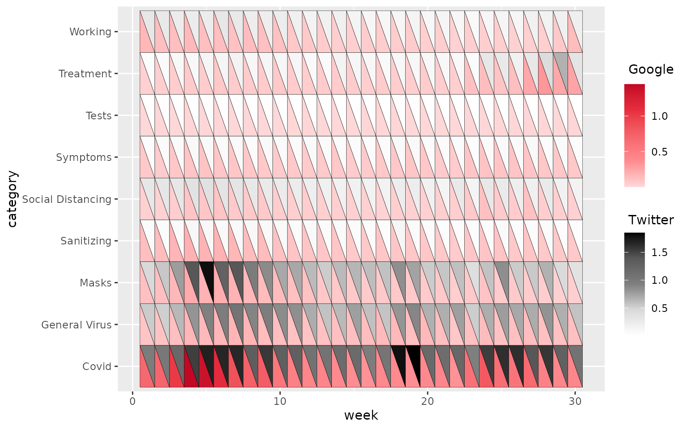
Unlike geom_heat_grid/circle() sharing the exact same arguments, geom_heat_tri() has slightly different arguments than the previous two geom_heat_*() functions. Instead of using outside and inside, it has lower and upper. Also, r does not exist in this function. Users can figure out why this is the case.
Now we can tidy up the heatgrid shown above:
pitts_tg %>%
ggplot(aes(week, category)) +
geom_heat_grid(outside = Google, inside = Twitter, trans = "sqrt",
r = 3.6,
labels = scales::percent_format(scale = 1)) +
theme_heat() +
remove_padding() +
labs(title = "Pittsburgh Google & Twitter Incidence Rate")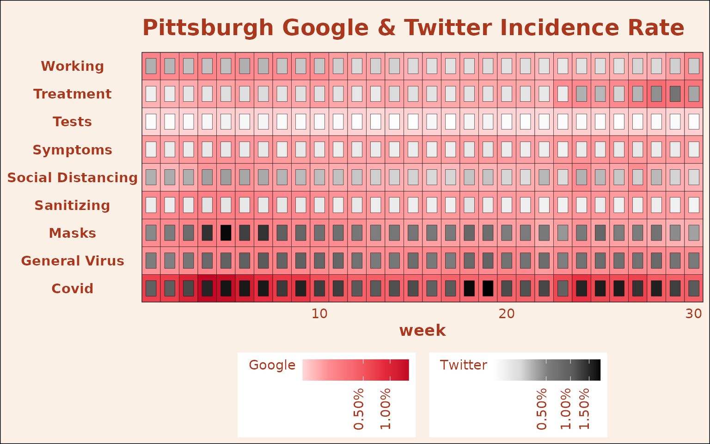
theme_heat() is a theme provided by the package.
So far, we have only visualized the incidence rates in Pittsburgh. Since we used faceting when visualizing pitts_tg at the begining, it is time to make a heatgrid with multiple states involved.
states_tg is another data set in the package, providing Google and Twitter weekly incidence rate for 4 states in the U.S., and it has the exact same data structure as pitts_tg. For more information, just type ?states_tg at the console.
states_tg %>%
ggplot(aes(week, category)) +
geom_heat_grid(outside = Google, inside = Twitter, r = 4, trans = "sqrt") +
facet_wrap(~state) 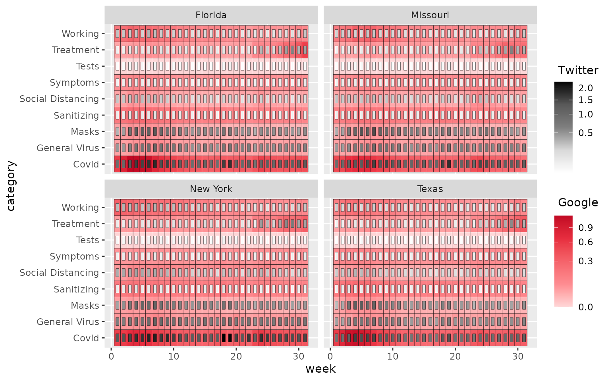
We have been discussing using the package to compare two data sources (i.e. Twitter & Google), but the other way to think about using ggDoubleHeat is when comparing mean and median of a single source. Let’s use the following iris example to demonstrate it:
iris_summarized <- iris %>%
pivot_longer(c(1:4), names_to = "metric") %>%
group_by(Species, metric) %>%
summarize(mean = mean(value),
median = median(value)) %>%
ungroup()
iris_summarized
#> # A tibble: 12 × 4
#> Species metric mean median
#> <fct> <chr> <dbl> <dbl>
#> 1 setosa Petal.Length 1.46 1.5
#> 2 setosa Petal.Width 0.246 0.2
#> 3 setosa Sepal.Length 5.01 5
#> 4 setosa Sepal.Width 3.43 3.4
#> 5 versicolor Petal.Length 4.26 4.35
#> 6 versicolor Petal.Width 1.33 1.3
#> 7 versicolor Sepal.Length 5.94 5.9
#> 8 versicolor Sepal.Width 2.77 2.8
#> 9 virginica Petal.Length 5.55 5.55
#> 10 virginica Petal.Width 2.03 2
#> 11 virginica Sepal.Length 6.59 6.5
#> 12 virginica Sepal.Width 2.97 3A common way to visualize iris_summarized is as follows:
iris_summarized %>%
pivot_longer(c(mean:median), names_to = "summary_metric") %>%
ggplot(aes(value, Species, fill = summary_metric)) +
geom_col(position = "dodge") +
facet_wrap(~metric) +
labs(fill = NULL)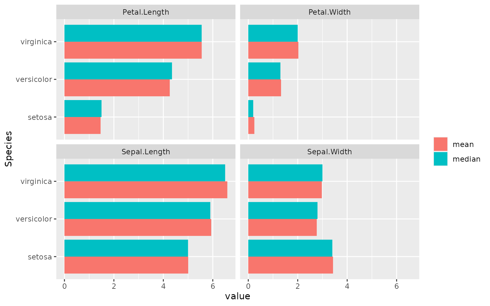
Now we can use heatgrid to visualize the summarized data:
iris_summarized %>%
ggplot(aes(Species, metric)) +
geom_heat_grid(outside = mean, inside = median)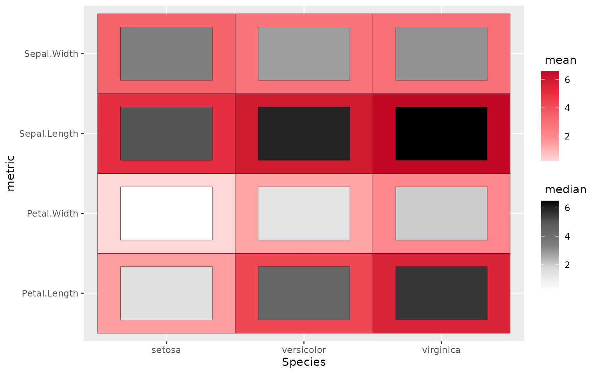
Here we see the mean and median across all sections are rather close within each grid. Otherwise, some stark difference would be caught by our eyes, thus giving us a rough picture of how data is distributed.
Usually, mean and median are not visualized on the same plot, but visualizing them on the same plot can give viewers important information on whether data has outliers on one side or the other. Using heatgrid can make such visualization easy and effective.
Why to use the package?
As all the code shown above, it is rather easy to use geom_heat_*() as long as users know how to use ggplot2, and the ggDoubleHeat plots offer some handy visual comparison for data on par with each other. All these plots are at least one dimension higher than a conventional heat map. Making them is effortless, as the package inherits ggplot2 features.